Shopping Website
What is Ropa de moda?
I was tasked with developing a shopping website called, Ropa de moda. I was asked to design a website for Ropa de moda to allow users to be able to shop and deliver their product during Covid period. Ropa de moda store lost most of its customers due to pandemic and it wants to offer to its customers very user- friendly and e-commerce site to motivate them to shop online.
PROJECT OVERVIEW
| Product | My Role | Software |
|---|---|---|
| Shopping website | UX researcher & UX designer | Figma, Sketch, photoshop, Adobe XD |
Objectives
I was tasked to design an e-commerce website as a platform for Ropa de moda to directly sell their clothes to customers. My objective was evaluated to be designing a platform that can benefit Ropa de moda in their quest to get investors and customers.
The project entailed developing a well-researched business strategy for the client that included a complete overhaul of their website to develop brand recognition.
Design Goals
- Introduce Ropa de moda as a shopping website to customers
- Develope a database of old and new customers
- Increase awareness about the benefits of shopping online
The Process
| Discover | Define | Develop | Design | Deliver |
|---|---|---|---|---|
| Business Analysis | Affinity Mapping | Scenario | Ideation, Sketches | Final Wireframe |
| Competitive Analysis | Create Persona | User Flow | Wireframes | Clickable Prototype |
| Comparative Analysis | Problem & Solution Statement | Information Architecture | User Testing | Visual Design |
| Contexual Research | Site Map | Iterations |
DISCOVER
Business and Competitive Analysis
I’d never been to Ropa de moda’s store, so this was a great opportunity to learn about a brand with fresh eyes. First, I went to their shop to discover what Ropa de moda is all about. I also read customer reviews on Google to see what makes the customers satisfied or unsatisfied. Once I understood Ropa de moda, I began to analyze the data on clothing sales online, some of it surprising from several online sources. One of the biggest surprises I found: In 2020, more than 84 percent of clothing goods were purchase online. Most were shopping through their mobile device. Those numbers surprised me. What was different about clothing goods that consumers were more likely to buy them online than in a store? I thought there was an opportunity to not only explore the “why” but also the how. How can Ropa de moda transcend the data and become a uniquely user-centered experience?
Through my research, I discovered more than 50 different potential competitors. Most of these competitors fit into separate subcategories: Specialty, discount, online, manufacturer. I thought I was going to have to draw a competitive analysis for Zara. But given the market data, my assumptions about Zara as a competitive seller of clothing goods was not valid because Ropa de moda isn’t a chain clothing store and the number of Zara’s stores aren’t comparable to the Ropa de moda store.
Filtering out competitors based on all the market and investment data, three competitors stood out. Since Ropa de moda has only one store, I searched the city for specialty clothing goods stores closest to Ropa de moda that offer similar products and selection. La Comet was the closest.
Defining the Competition
La Comet is the first competitor I analyzed that fit into a similar mold as Ropa de moda. They sell a similar selection of high-quality brands. They have a higher customer value ranking of 4.2 out of 5 on Google from a comparable number of users. They can compete against Ropa de moda on customer service and expertise. They are an institution, founded in 1938 in Barcelona, which have been expanding nationwide. They also clearly speak to their audience of adventurists through their content and product classifications, or taxonomies.
Melocoton clothing goods was the next competitor that rose to the top. Their customer base seeks quality brands at a great price, and because of that, they are the largest specialty clothing goods retailer by sales in Barcelona. Founded in 1948, Dick’s has a brick-and-mortar footprint in only one borough of Barcelona, but given their ability to sell sporting goods at competitive prices, I saw a threat.
Soul clothing goods was the third prime competitor I chose as it shares similarity with Ropa de moda in terms of size of the store and number of customers approximately.
Comparative Analysis and User Flows
I performed a heuristic analysis on the user flows of La Comet, Melocoton and Soul sites, comparing under a set of criteria how the user moves through the site from product discovery to checkout. Putting myself in the user’s shoes, I used Abby Covert’s heuristics to frame the analysis. Covert’s nine criteria — findable, accessible, clear, communicative, useful, credible, controllable, valuable, learnable and delightful — was used to dissect each competitor’s user flow. Questions such as “Is it easy to recount?,” “Can it be grasped quickly?,” “Can a user easily describe the value?” were among 45 questions. When each was answered to the best of my evaluation, I rated each answer on a scale of 1 to 5 — 1, failing to exhibit professional execution; 3, meeting expectations; and 5, exceeding expectations.
La Comet header
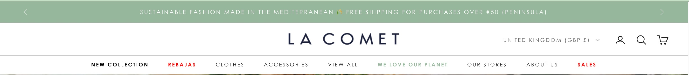
La Comet footer

Melocoton header
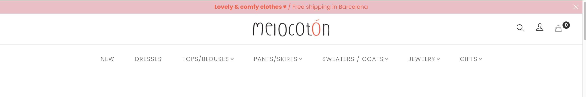
Melocoton footer
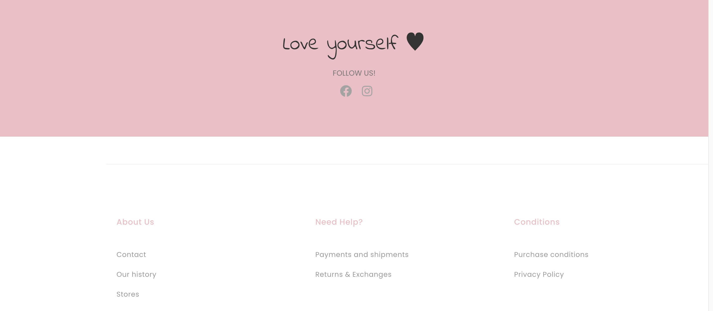
Soul header
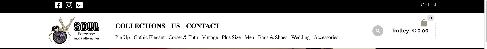
Soul footer
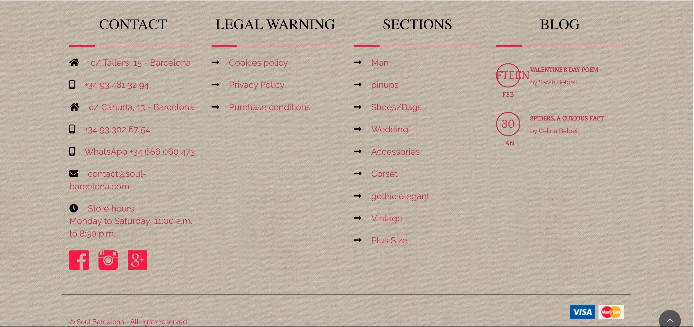
Comparing the Navigation
This is where the journey would begin as a user. For each site, I attempted to find an item as my main persona. In some cases, the information architecture would slow me down and make the experience less rewarding. The checkout process would be another user flow I would test.
Heuristic Analysis Result
After the heuristic analysis was complete, La Comet scored the highest, with a 3.45. Melocoton was second with 2.76 and Soul was third, with 2.26. If I had the time, I would’ve also gone back and counted the number of clicks it took to go from product discovery to checkout.
La Comet was the best by far, overall:
- Help, product returns and customer service is highly visible and accessible.
- The navigation was intuitive, but not consistent. The categories aren’t labeled by gender.”There’s also categories “New Collection” Their analytics must tell them that their target users come to the site often and need to know what’s new quickly.
- Reviews offers reassurance what the users feels with the product.
As far as my experience with Melocoton and Soul’s clothing goods:
- Soul’s main navigation is less consistent, and in some cases, way too general. The menu is not very clear where to find various types of clothes.
- Melocoton’s main navigation is more consistent in their categories than Melocoton’s. It’s split by “Dresses”, “Pants/Skirts”, “Sweaters/Coats”, “Tops/Blouses”, and “Jewelry”. It’s more appealing to a general audience in search of clothing goods.
- Help was less present on Soul’s site. On Melocoton’s site, it’s also hidden.
La Comet product discovery and checkout user flow
In my first user flow, I can see that instead of using the search function to find clothes, user can click through the main navigation to find different types of clothes. I can see that some pages don’t go to the home page directly and the user has to click many times to go to the main page. I think this can be a good navigation flow for my personas since it is easy to find what you’re looking for and leads you to a payment method.
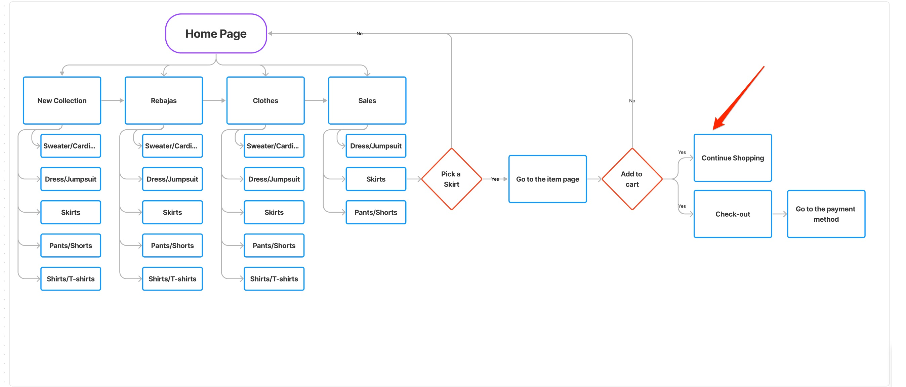
Melocoton product discovery and checkout user flow
In my second user flow, the user can accomplish the same task. However, in the process of choosing the item, it’s not clear why the user requires to click many times to see the Buy option. In the process of buying the item, there is no ‘Add to cart’ option and it goes directly to the payment method which I think that makes the user to go through the purchasing process for every single item.
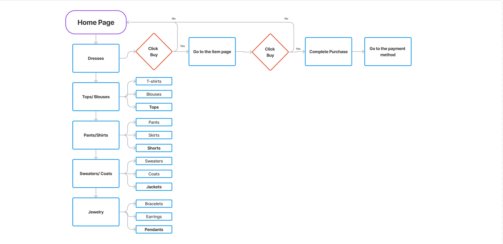
Soul product discovery and checkout user flow
In my third and final user flow, the main difference in the process is the main navigation. Beyond finding a product, the menu is cluttered and repetitive. the experience of checkout is not much different from La Comet. I argue that La Comet’s category labels are more intuitive in my heuristic analysis.
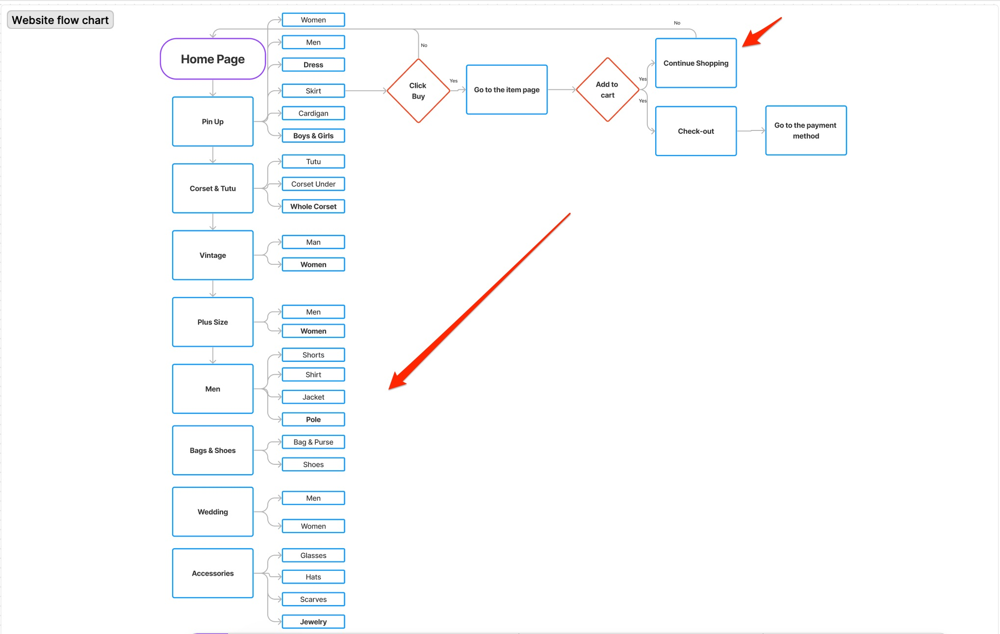
Contexual Research
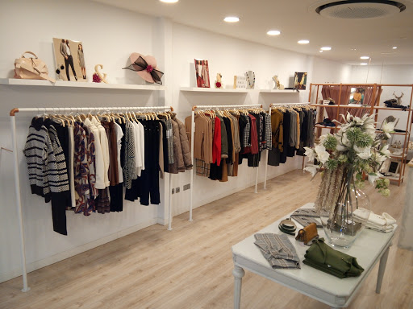
My Observation was that most people that shop from Ropa de moda are:
- Different age group from 16 to 75
- Employed, student, and retired
- Love being fashionable
- Have a regular shopping habit
So, I decided that my 2 personas are from different ranges:
- A mother in her late 30s that is conscious- shopper. She is educated and not very comfortable with developing and new technologies.
- A teenage girl who loves to be fashionable. She is very good with technology but not very patient with confusing websites.
DEFINE / ANALYSIS
Define Research
After Research, I wanted to gather feedback from the existing users. I interviewed some of my respondents, then conducted affinity mapping.
With the survey, I understood who can be potential users and what they want.
Then I made our PERSONA according to our research.
Affinity Mapping
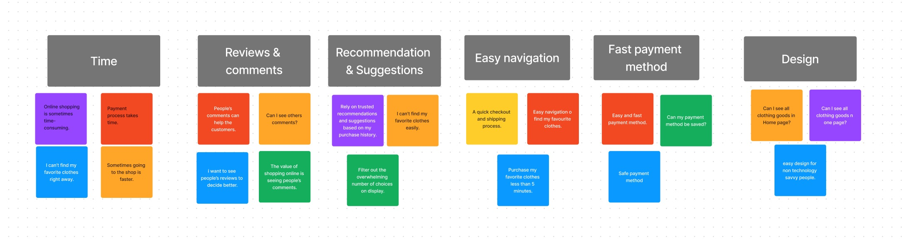
Important for website:
- Time
- Quality
- Design
- Reviews & comments
- Easy navigation
- Fast & Easy payment method
Personas
Our representation of the target audience is captured by the data gathered in the research.
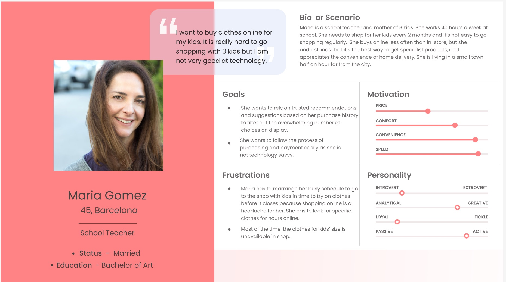
Meet Maria
- She is a 45- year- old professional mom of three children.
- She has a busy schedule and a full-time job.
- She is always searching to find the right clothes for her kids.
- She buys online less often than in-store, but she understands that it’s the best way to get specialist products, and appreciates the convenience of home delivery.
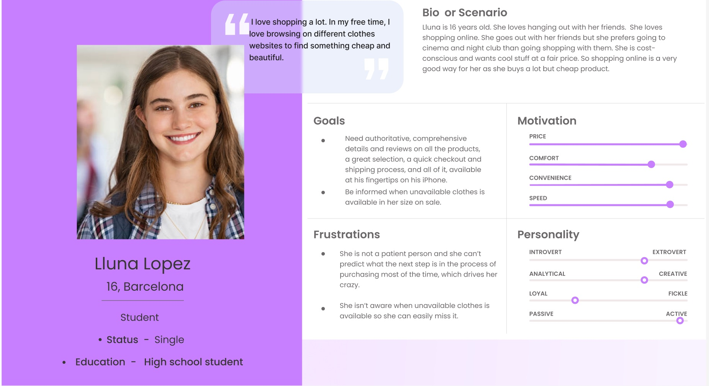
Meet Lluna
- She is a 16- year- old student who is very sociable.
- she loves hanging out with her friends and going to different parties and night club.
- She buys clothes a lot but she is cost-conscious and wants cool stuff at a fair price.
- Although she buys a lot, she will wait it out on a purchase until the price is right.
But beyond their specific needs and pain points, what they had in common was something everyone wants in a shopping experience: To accomplish their goals easily.
| Pain points | Probable solutions |
|---|---|
| Browsing on the website takes so much time | Easy navigation, a quick checkout and shipping process |
| Not available for purchase | Notify the customer when unavailable product is available |
| Lack of reviews and comments | Add review and comments section |
DEVELOP
According to what Maria and Lluna need
For developing the idea I considered a scenario to respond to our Personas’ needs, and I conducted the user flow to show their journey through the website.
Flow Diagram
Scenario & User Flow
The journey Maria and Lluna take to explore the website and buy the clothes.
The journey Maria and Lluna take to explore the website and buy clothes.
Information Architecture
Card Sorting
With various products now available to choose from, I began the process of card sorting. For the first card sorting session, not being a shopper of clothes myself, I thought it was a good exercise to begin with my own open card sort. I sort all the items into their respective categories and subcategories.
In my initial sort, I only had four categories: “Women”, “men”, “Teen”, and “Kids”. Subcategories for all were split by “New Collection”, “Clothing”, “Shoes & Accessories”, and “Sales” . For “Teen” and “Kids”, it was subcategorized by gender.
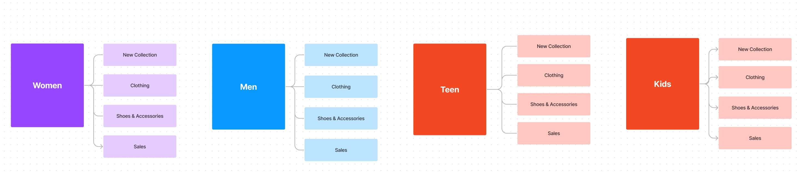
I did another open card sort, but with different users. Then I concluded with various sub-categories for women, Men, teen, and kids clothing. I considered my three personas in mind to help me to categorize the menu. It’s quite difficult becuase I wanted to make the process of users easy and accessible. I also wanted to make the process faster for my users to find their product in less time. Two of my personas aren’t technologically savvy, so I needed to make the content easy to access and understandable. When I went to the Ropa de moda store, the kids’ section absorbed my attention. It has A big section for kids’ clothes in different ages. So what I decided to do is to categorize his section carefully based on kids’ age range.
With the data and insights I got from research and card sorting, I developed my taxonomies for Ropa de moda’s new e-commerce site so that they were as intuitive to the target user as possible:
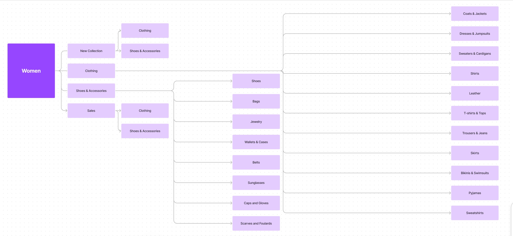
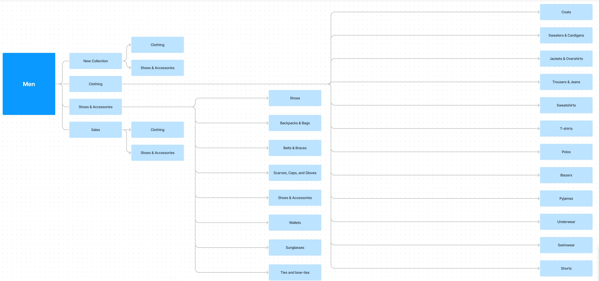
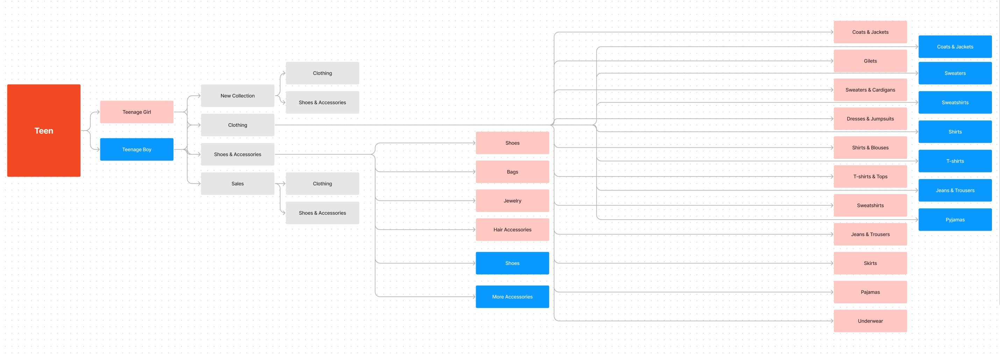
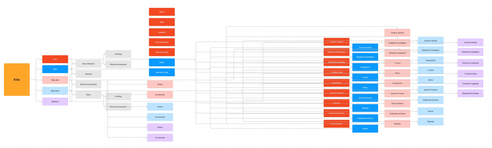
Site Map
I built a hierarchical map of how the navigation would be structured. This would be the bones of the site, so it was important that, based on the results of my card sorting and research, the site map flow and that the taxonomies be scalable into the future.
The site map I designed for Ropa de moda clothing company’s E-commerce site, based on card sorting and research:
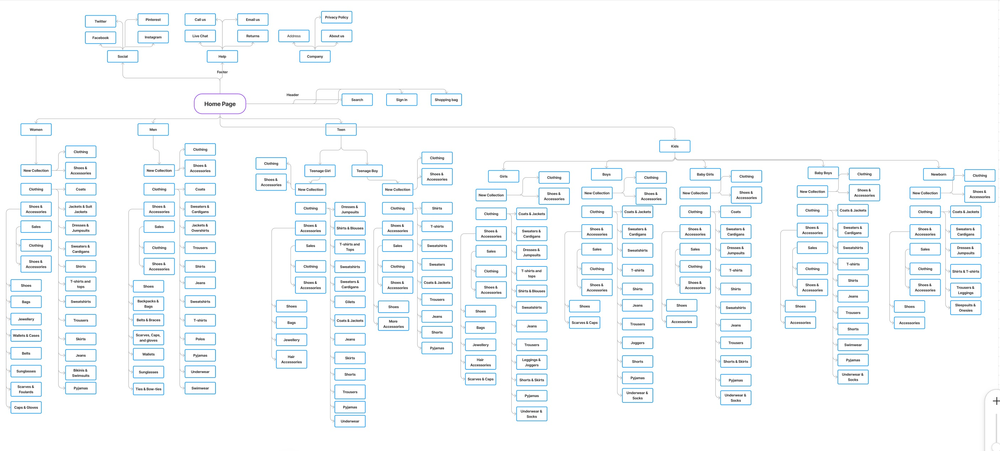
Header & Footer:
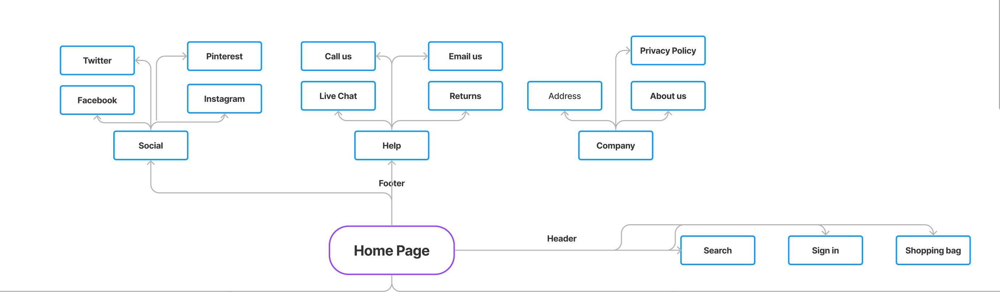
Home page: Women & Men categories:
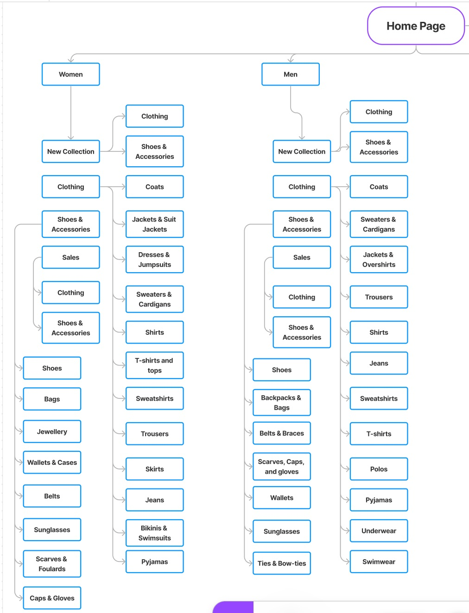
Home page: Teen categories:
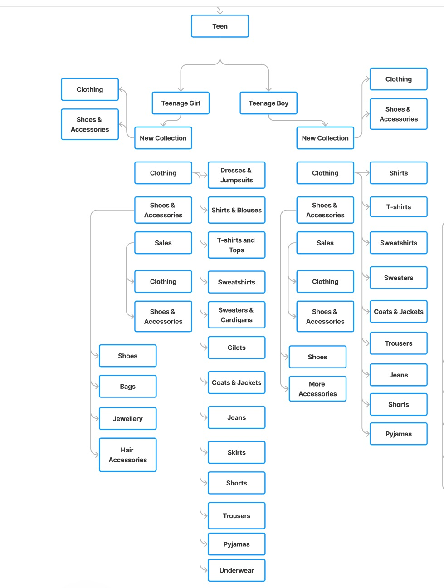
Home page: Kids categories:
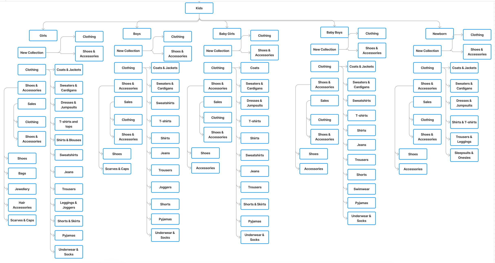
DESIGN
Sketching and Wireframing
Once I had a clean, easy-to-follow site map, I began the process of ideating and sketching in low-to-medium fidelity. I began with the global navigation, sketching layouts, scaling text and call-to-action buttons. I then began to draw entire page template layouts for the homepage, a product landing page, a product page, a cart page and multiple checkout pages, including for registration, shipping, payment, review and confirmation.
All of these pages included sketching common navigational elements, such as breadcrumb and local faceted navigation, as well as custom elements, such as review forms, product details, photos, and more. In the process, I was always thinking about contrast, repetition, alignment and proximity of elements on the pages.